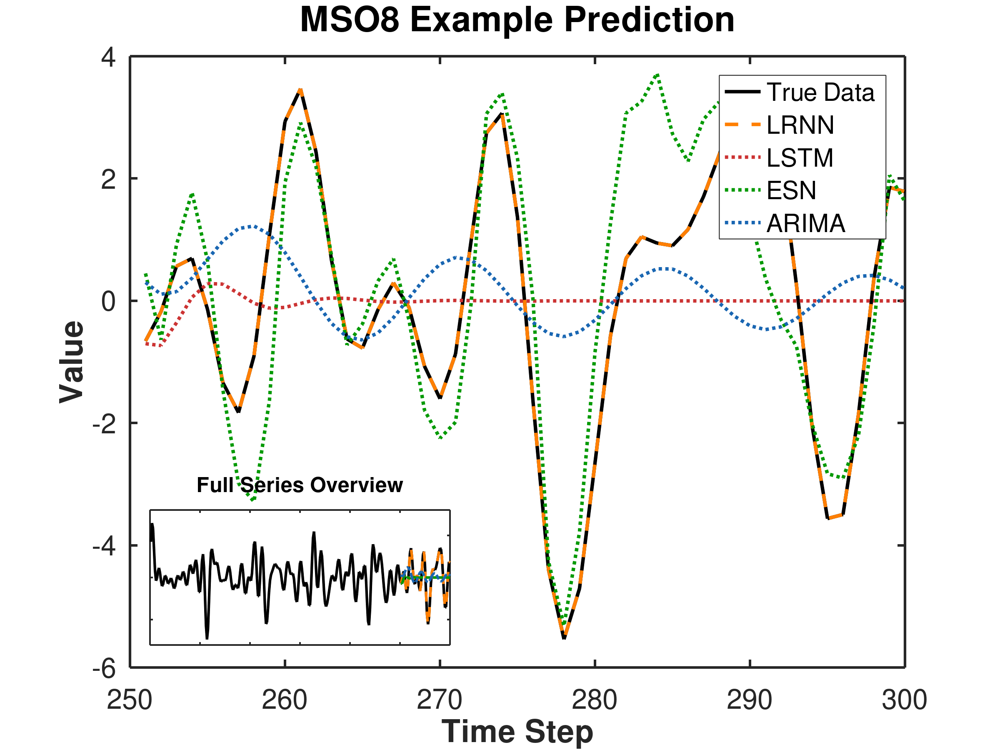

Multiple superimposed oscillators
Eight-frequency signals with 16-state representations
A signal made from eight sinusoids needs two state values per frequency. The paper reports 16-state LRNNs with error below 10−5 on the fixed MSO signal.
With 150 training samples and at least 70 initial reservoir neurons, the paper reports minimal-size networks in at least 96% of 100 trials. Its random-frequency study also shows difficulties when frequencies are close together or very small.
Paper, Section 5.1